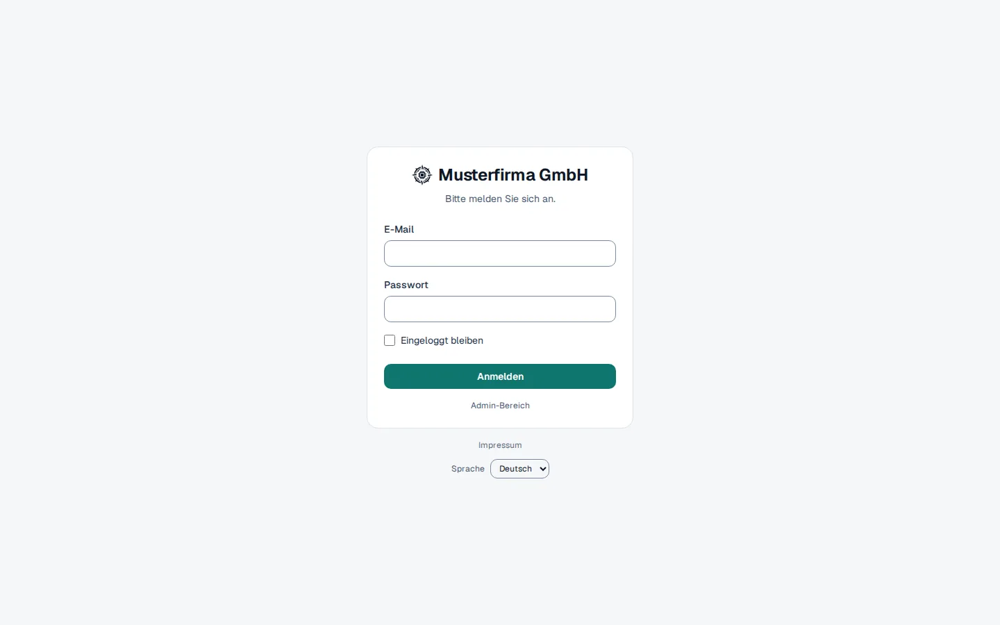
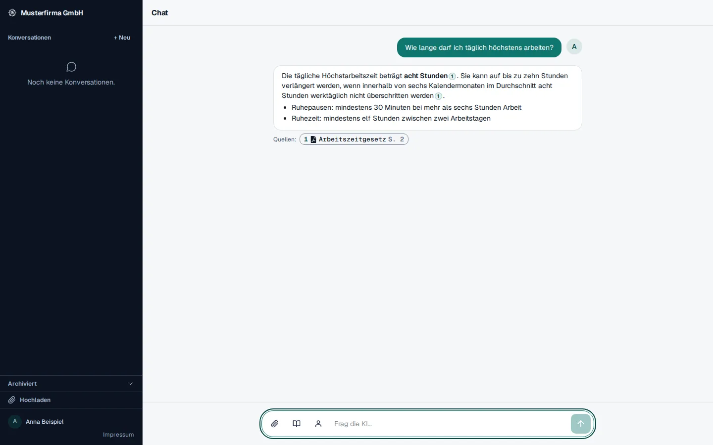
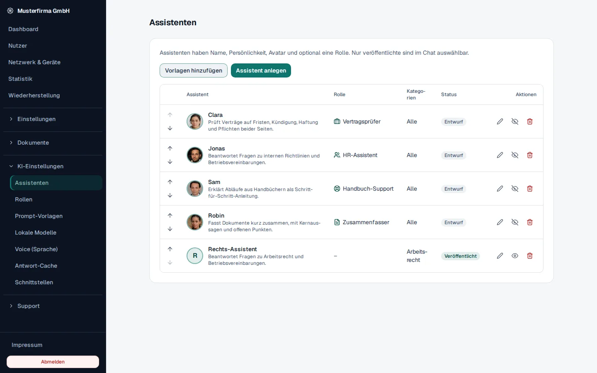

Schnellstart
Von „Download“ zur ersten belegten Antwort, auf Ihrer eigenen Hardware und in unter zwei Minuten Lesezeit.
Voraussetzungen prüfen
Ein Rechner mit 8 GB VRAM und 16 GB RAM, Windows 10/11, Debian/Ubuntu oder RHEL/Fedora (x64). Ohne GPU läuft alles auf der CPU, deutlich langsamer.
- Windows 10 (1809), Windows 11, Server 2019+, Debian/Ubuntu oder RHEL/Fedora (x64)
- Empfohlen: 8 GB VRAM und 16 GB RAM
- Kein Python, kein Docker, kein API-Schlüssel
Installieren
Ein Befehl im Terminal lädt Installer und Modelle. Den Einzeiler können Sie vorab lesen.
Windows (PowerShell, am besten als Administrator)
Linux (Debian/Ubuntu, RHEL/Fedora)
Alternativ als Setup-Datei: Download-Seite.
Demo starten und Modelle laden
Beim ersten Aufruf wählen Sie „Demo starten“. Als Admin laden Sie im Tab „Lokale Modelle“ die KI-Modelle, falls der Installer das nicht schon getan hat.

Die Demo läuft 24 Stunden ohne Lizenzschlüssel, nur auf Ihrem Rechner (http://localhost:5043). Zugangsdaten und Grenzen: Demo.
Dokumente hinzufügen
Laden Sie Dateien im Admin-Bereich hoch und ordnen Sie sie einer Kategorie zu. Der Verarbeitungsstatus zeigt, wann ein Dokument bereit ist. Fertige Bestände wie Gesetze gibt es als Wissenspaket.

Erste Frage stellen
Stellen Sie im Chat eine Frage zu Ihren Dokumenten. Die Antwort nennt ihre Quellen, ein Klick öffnet die Stelle im Originaldokument.

Anpassen und vergleichen
Wählen Sie einen Assistenten, ändern Sie Rolle und Persönlichkeit und stellen Sie dieselbe Frage erneut. So sehen Sie, wie sich die Antwort verändert.

Weiter
Schnittstelle, Betrieb und Anbindungen finden Sie in der Dokumentation.